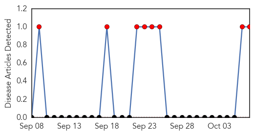
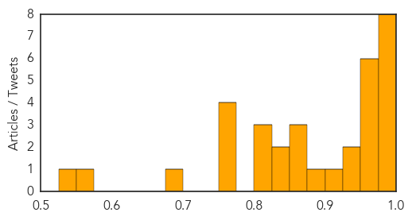

Hemmorhagic Fever
30-Day Web Trend
8 alerts, 0 warnings

30-Day Twitter Trend
0 alerts, 0 warnings

Article Locations

Article Confidences

Top Articles:
Top Tweets:
-
No tweets found for Oct 07, 2015
Influenza
30-Day Web Trend
7 alerts, 5 warnings

30-Day Twitter Trend
0 alerts, 0 warnings

Article Locations

Article Confidences
Top Articles:
- 0.999
- Tips for Traveling During Flu Season
- 0.998
- Possible Mers case in Yala
- 0.998
- FDA Clears the Focus Diagnostics Direct Test to Include New Virus Strains for Flu Season
- 0.998
- Doctors anticipate nasty flu season
- 0.996
- Flu-associated pneumonia tied to skipped flu vaccine
- 0.989
- MyEasternShoreMD: Queen Anne's County News
- 0.986
- Influenza-related pneumonia hospitalizations could be prevented through influenza vaccination
- 0.984
- Flu Vaccine Is Plentiful, And Now Is The Time
- 0.974
- News Scan for Oct 07, 2015
- 0.973
- New flu vaccine being offered in Nova Scotia - Halifax
- 0.972
- Tackling swine flu: States told to file status report by Oct 10
- 0.967
- Hospitals told to prepare for H1N1 patients
- 0.963
- Experts Advise Getting Vaccinated Regardless Of Flu Season Severity « CBS Dallas
- 0.958
- Get flu vaccine now, says Luxembourg's Health Ministry
- 0.944
- 4 Things to Know About Flu Shots and Work
- 0.931
- Editorial: End shot hysteria
- 0.921
- Treasure Coast Urgent Care Gives Tips on the Flu Season 2015
- 0.880
- China’s food safety epidemic continues to thwart health efforts
- 0.869
- Flu research and biological warfare
- 0.869
- Flu vaccines will soon be available at county health departments in Oklahoma
- 0.862
- Today's stories from newspapers in Parry Sound
- 0.848
- Today's stories from newspapers in Belleville Region
- 0.845
- Schabas criticizes flu vaccine program
- 0.816
- Avian influenza could return as fall migration continues
- 0.800
- Today's stories from newspapers in Ottawa
- 0.800
- Today's stories from newspapers in Ottawa
- 0.751
- October 7, 2015 Archives
- 0.751
- October 7, 2015 Archives
- 0.751
- October 6, 2015 Archives
- 0.751
- October 6, 2015 Archives
- 0.676
- H5N2 Strain of Bird Flu Virus Infecting Farms in Canada
- 0.555
- The U.S. Military and the Influenza Pandemic of 1918�1919
- 0.526
- Free flu shots available Friday in Delaware
Top Tweets:
-
No tweets found for Oct 07, 2015